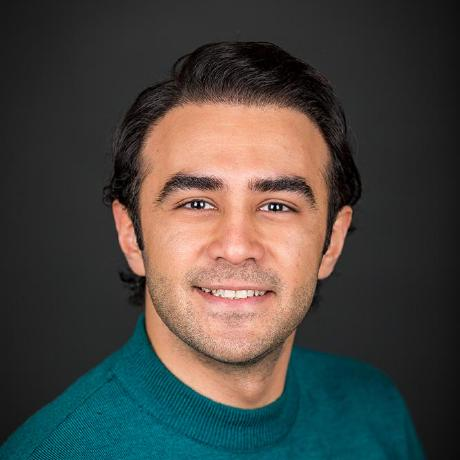

Arshia Ilaty
PhD Student
UC Irvine
Arshia Ilaty is a Ph.D. student in Computer/Computational Science at UC Irvine, specializing in privacy-preserving machine learning and synthetic data generation for healthcare applications. With a strong foundation in both academic research and industry experience, Arshia has developed innovative solutions across healthcare analytics, blockchain technology, and autonomous systems at organizations including Tesla, World Mobile, and Turtle Beach. His research integrates generative AI, deep learning, and domain-specific biosignal processing to address critical challenges in personalized medicine, clinical trial retention, mental health monitoring, and early disease detection across diverse conditions including stress, pain, breast cancer, and metabolic disorders. Beyond research, Arshia is an active entrepreneur who secured funding from ZIP Launchpad for an AI-powered pet health monitoring system, demonstrating his ability to translate technical expertise into real-world impact. He serves as a reviewer for top-tier conferences, including NeurIPS, Chase, and IEEE CogMI, and actively contributes to open-source projects in machine learning. Driven by a passion for solving complex technical challenges, Arshia combines rigorous scientific thinking with practical engineering to advance the intersection of AI and healthcare.
ailaty@uci.edu